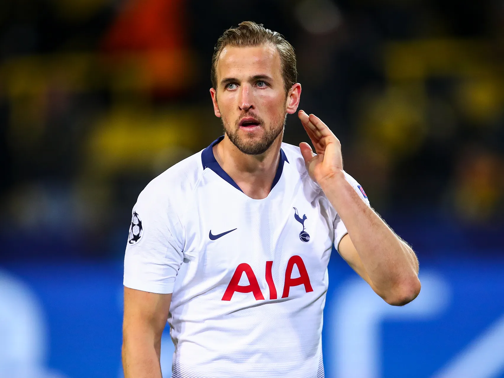
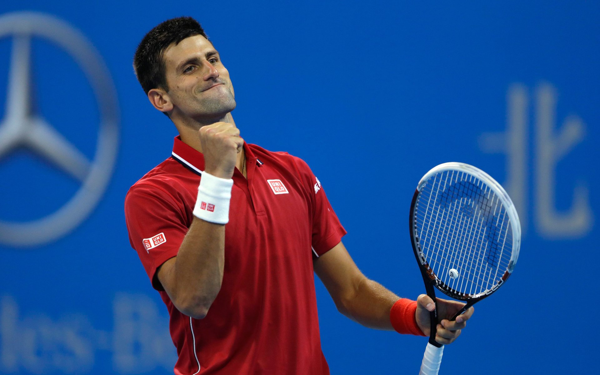

Top Stats

Top Scorer: Harry Kane
Harry Kane is currently leading the Premier League with 28 goals, Tottenham's star forward continues to dominate the English top flight. Full story here...
Read More

Novak Djokovic: 22 Grand Slams
Novak Djokovic has secured his 22nd Grand Slam title after defeating Rafael Nadal in the Wimbledon finals. He is now tied with Roger Federer for the most Grand Slam singles titles, Full story here...
Read More